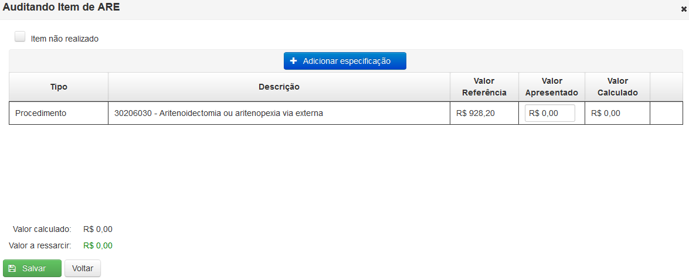
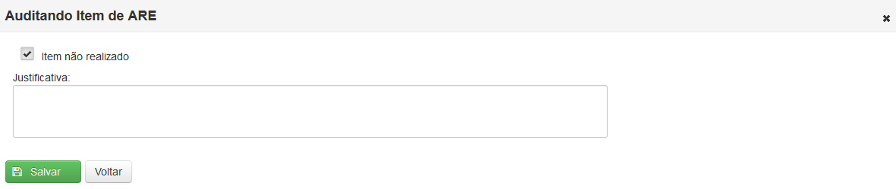

Ao clicar na opção 'Realizar Auditoria ARE' o Sistema apresentará uma tela onde será exibida uma lista com as ARE para serem auditadas.

Ao clicar no botão Visualizar ( ) é exibida a tela 'Auditoria Retrospectiva – Auditando ARE', contendo os dados da solicitação e da auditoria prospectiva.
) é exibida a tela 'Auditoria Retrospectiva – Auditando ARE', contendo os dados da solicitação e da auditoria prospectiva.

Tela de auditoria da ARE
Para iniciar a auditoria do item de ARE deve-se clicar no ícone().

Auditando item de ARE
O valor a ressarcir será sempre o menor valor entre o 'Valor Referência' e o 'Valor Apresentado'.
Depois de preencher o valor apresentado deve-se clicar em() para finalizar a auditoria.
Caso a opção 'Item não realizado' seja marcada, o preenchimento de uma justificativa é obrigatório.

Janela para justificativa de item não realizado